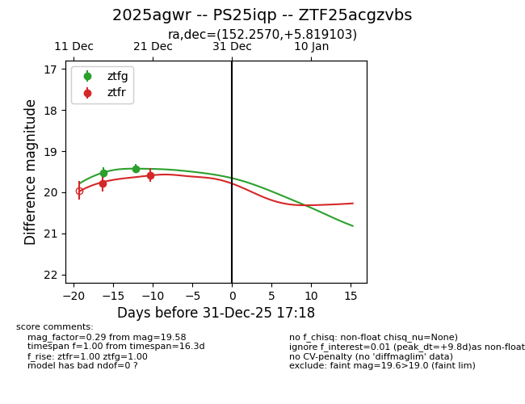
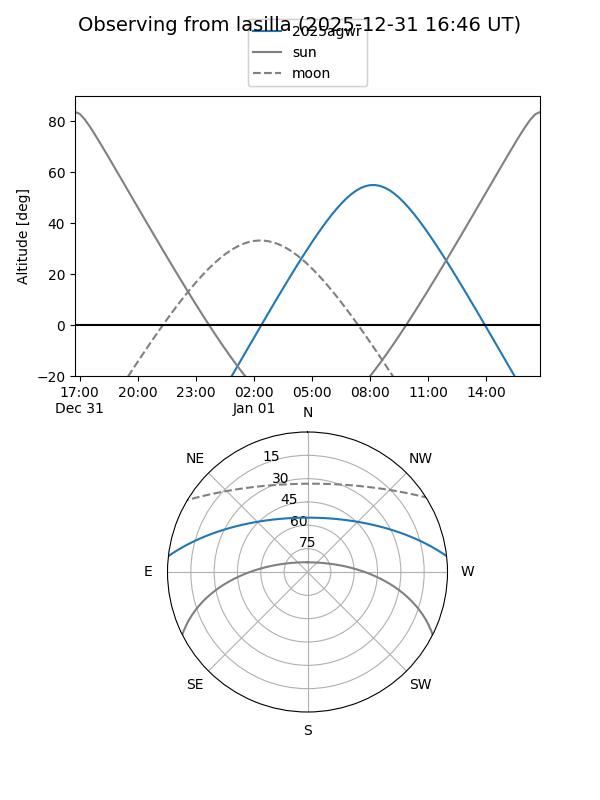
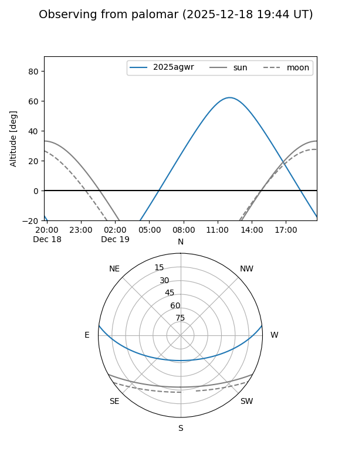

2025agwr
Target 2025agwr at 2025-12-18 11:18
Aliases and brokers:
FINK: fink-portal.org/ZTF25acgzvbs
Lasair: lasair-ztf.lsst.ac.uk/objects/ZTF25acgzvbs
ALeRCE: alerce.online/object/ZTF25acgzvbs
TNS: wis-tns.org/object/2025agwr
YSE: ziggy.ucolick.org/yse/transient_detail/2025agwr
alt names
ZTF25acgzvbs (ztf,fink_ztf)
2025agwr (tns,yse)
PS25iqp (panstarrs)
Coordinates:
equatorial (ra, dec) = 152.2570,+5.81910
equatorial (HMS+DMS) = 10:09:01.69,+05:49:08.77
galactic (l, b) = (234.3665,+45.92805)
Photometry
last ztfg=19.52, ztfr=19.78
1 ztfg, 1 ztfr detections
Lightcurve

Visibility


Additional plots